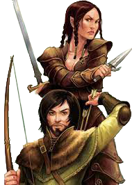

Meio-Elfos
Vagando entre dois mundos mas, na verdade, não pertencendo a nenhum dos dois, meio-elfos combinam o que alguns dizem ser as melhores qualidades dos seus parentes elfos e humanos: a curiosidade, inventividade e ambição humanas temperadas pelos sensos refinados, amor a natureza e gostos artísticos dos elfos. Alguns meio-elfos vivem entre os humanos, separados por suas diferenças emocionais e físicas, vendo seus amigos e amores envelhecer enquanto o tempo malmente os toca. Outros vivem entre os elfos, crescendo impacientes à medida que atingem a maturidade nos reinos élficos intermináveis, enquanto seus amigos continuam a viver como crianças. Muitos meio-elfos, incapazes de se encaixar em nenhuma dessas sociedades, escolhem uma vida solitária, vagando ou se juntando a outros desafortunados e adentrando uma vida de aventura.
De Dois Mundos
Para os humanos, os meio-elfos parecem elfos, e para os elfos, eles parecem humanos. Na aparência, eles estão entre ambos os parentes, já que eles não são nem tão esbeltos quanto os elfos nem tão largos quanto os humanos. Eles medem entre 1,5 metro e 1,8 metro de altura e pesam entre 50 kg e 90 kg, sendo os homens apenas um pouco mais altos e pesados que as mulheres.
Meio-elfos possuem pelos faciais e, as vezes, deixam a barba crescer para esconder sua ancestralidade élfica. A cor e características dos meio-elfos reside entre seus parentes humanos e elfos e possui uma variedade maior até que a encontrada entre ambas as raças. Eles tendem a ter os olhos dos seus pais elfos.
Diplomatas ou Andarilhos
Meio-elfos não possuem terra própria, no entanto, eles são bem-vindos em cidades humanas e um pouco menos bem recebidos em florestas élficas. Em cidades grandes, em regiões em que elfos e humanos costumam interagir, meio-elfos podem ser numerosos o suficiente para formar pequenas comunidades entre eles. Eles gostam da companhia de outros meio-elfos, o único povo que realmente entende o que é viver entre dois mundos.
Na maior parte do mundo, no entanto, meio-elfos são incomuns o suficiente ao ponto de que um pode viver anos sem encontrar outro. Alguns meio-elfos preferem evitar completamente companhias, vagando pela natureza como caçadores, mateiros, patrulheiros ou aventureiros, visitando a civilização em raras ocasiões. Como os elfos, eles são guiados pela sede por viagens que acompanha sua longevidade. Outros, em contraste, imergem no seio da sociedade, aproveitando-se do seu carisma e perícias sociais efetuando papeis diplomáticos ou de vigaristas.
| Raças Incomuns |
|---|
| As raças aqui descritas são consideradas raras e não existem em todos os mundos de D&D. Mesmo quando são encontrados, eles são menos difindidos que os anões, elfos, halflings e humanos, os quais são considerados as raças comuns do universo D&D. Nas Cidades Cosmopolitas do multiverso de D&D, a maioria das pessoas dificilmente olha duas vezes paara o membro, até mesmo das raças mais exóticas. Mas as pequenas cidades e vilas que permeiam a zona rural são diferentes. O povo comum não está acostumado a ver membros dessas raças e reagem de acordo. |
| Draconatos É fácil presumir que um draconato é um monstro, principalmente se suas escamas possuírem uma herança cromática. A não ser que o draconato comece a cuspir fogo e causar destruição, no entanto, as pessoas tendem a reagir com cautela ao invés de com medo descontrolado. |
| Gnomos não aparentam ser uma ameaça e podem rapidamente derrubar quaisquer suspeitas com bom humor. O povo comum geralmente possui muita curiosidade a respeito dos gnomos, como se nunca tivessem visto um antes, mas eles dificilmente são hostis ou temidos. |
| Meio-Elfos Apesar de muitas pessoas nunca terem visto um meio-elfo, praticamente todos conhecem sua existência. A chegada de um forasteiro meio-elfo é seguida por fofocas e olhares curiosos em salões comuns, ao invés de qualquer confronto ou curiosidade perceptível. |
| Meio-Orcs tem por característica comum a agressividade e temperamento facilmente enfurecido, o que é seguro de se presumir, por isso as pessoas ficam preparadas quando existe qualquer meio-orc estranho por perto. Vendedores irão repentinamente esconder itens valiosos ou bens frágeis quando um meio-orc entrar, pessoas irão partir da taverna discretamente, presumindo que uma briga iminente se aproxima. |
| Tieflings são alvos de um medo sobrenatural, diferentemente dos meio-orcs, que são tratados com precaução prática. O mal inerente a sua herança é claramente visível em suas características e, o que a maioria das pessoas imagina, é que um tiefling pode perfeitamente ser um diabo vindo dos nove infernos. Pessoas farão sinais de alerta quando um tiefling se aproximar, atravessarão a rua para evitar passar perto ou bloquearão as portas de lojas antes que um tiefling possa entrar. |
Nomes de Meio-Elfos

Meio-elfos usam tanto nomes convencionais humanos quanto élficos. Como se quisessem enfatizar que não se encaixam em nenhuma das sociedades, meio-elfos que crescem entre humanos geralmente adotam nomes élficos, e os que crescem entre os elfos, geralmente adotam nomes humanos.
Traços Raciais dos Meio-Elfos
Seu personagem meio-elfo possui algumas qualidades em comum com os elfos e algumas são exclusivas dos meio-elfos.
Aumento no Valor de Habilidade. Seu valor de Carisma aumenta em 2 e outros dois valores de habilidade, à sua escolha, aumentam em 1.
Idade. Meio-elfos atingem a maturidade ao mesmo tempo que os humanos atingem a idade adulta, por volta dos 20 anos. Eles vivem muito mais que os humanos, no entanto, raramente ultrapassam os 180 anos.
Tendência. Meio-elfos compartilham a veia caótica da sua herança élfica. Eles valorizam tanto a sua liberdade quanto sua expressão criativa, não demonstrando qualquer apresso por líderes ou seguidores. Eles se irritam com regras, ressentindo com exigências de outros e, as vezes, se provam incertos, ou pelo menos, imprevisíveis.
Tamanho. Meio-elfos tem aproximadamente a mesma altura dos humanos, variando entre 1,50 metro e 1,80 metro. Seu tamanho é Médio.
Deslocamento. Seu deslocamento base de caminhada é 9 metros.
Visão no Escuro. Graças ao seu sangue élfico, você tem uma visão superior no escuro e na penumbra. Você enxerga na penumbra a até 18 metros como se fosse luz plena, e no escuro como se fosse na penumbra. Você não pode discernir cores no escuro, apenas tons de cinza.
Ancestral Feérico. Você possui vantagem em testes de resistência contra encantamento e magia não pode colocar você pra dormir.
Versatilidade em Perícia. Você ganha proficiência em duas perícias, à sua escolha.
Idiomas. Você sabe falar, ler e escrever Comum, Élfico e um idioma adicional, à sua escolha